Plog | 八月日常记录 | 2024
一场冰雹
八月，仍是酷暑，没有假日，似乎没什么可记的，就记得有一场很大很大的雨，夹杂着冰雹。
那天是工作日，中午还酷暑难耐，下午三点多，突然天就黑下来，没一会儿就下起大雨。当时正上着班，听说在下冰雹，感到很惊奇，于是跑下楼去“观赏”。我下去的时候，只剩大风和大雨，楼下保安见我叹息没看到冰雹，打开他的手机视频给我看，说他拍下来了，哈哈，真热心的保安大哥。
后来站了一会，又一波冰雹下下来，持续了很久，天空和地面都是模糊的，冰雹从室外跳进我们站的地方，小孩子高高兴兴地捡着玩儿。
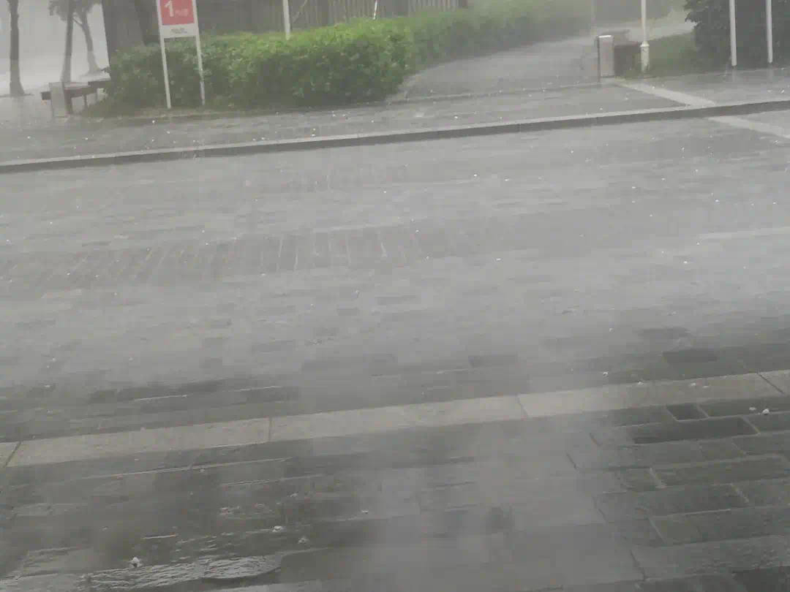
一个月去了四次的点心店
春家非遗小吃店，一个月去了四次，倒不是因为有多好吃，而是环境、味道、价格三者很平衡，适合在不太饿，但想找个地方坐坐，吃点东西时的选择。
冰豆花和肉酱拌粉是最推荐的。
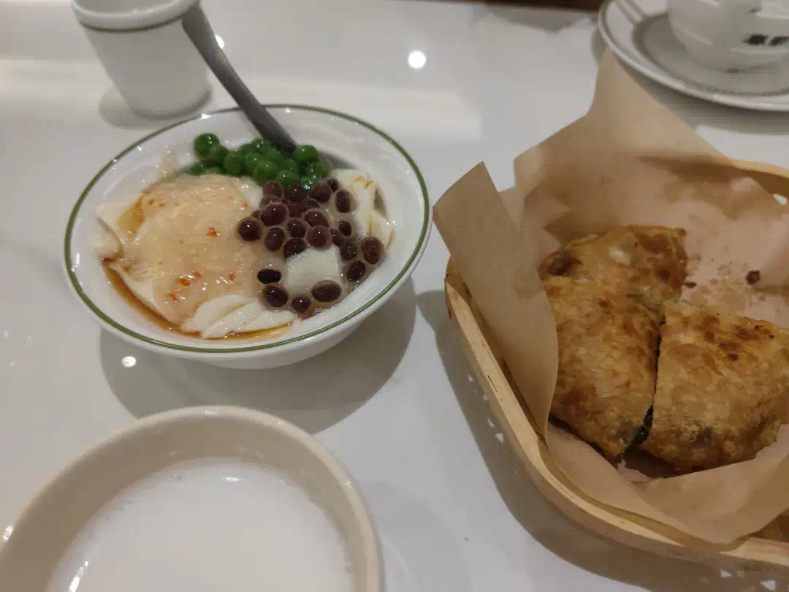
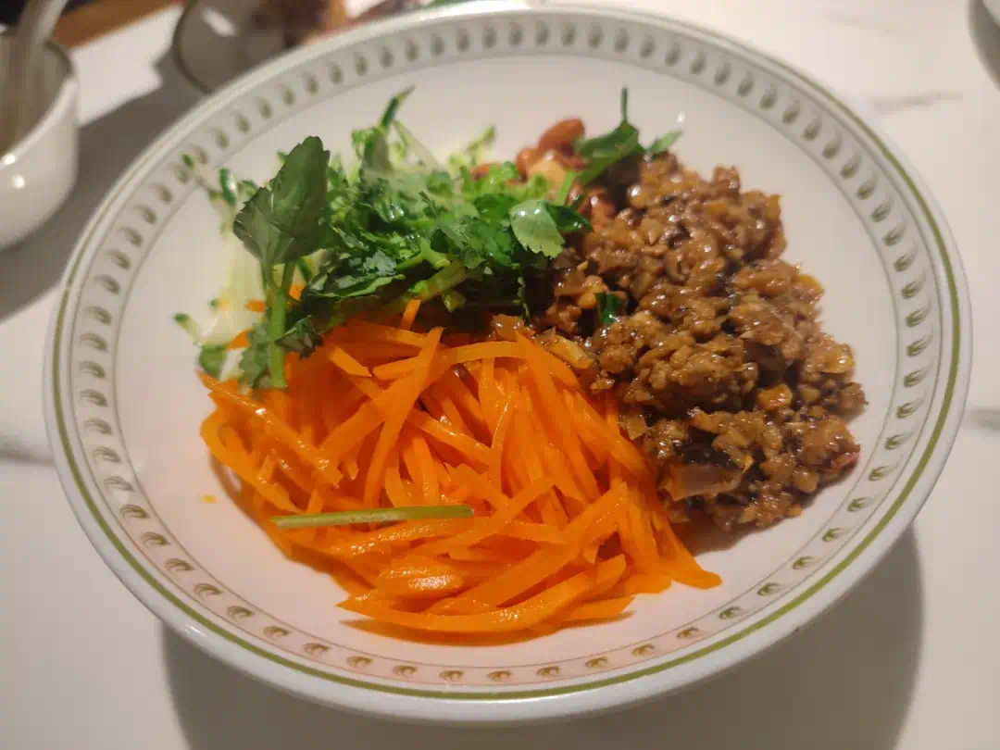
鸡爪、锅贴、小馄饨也还可以。
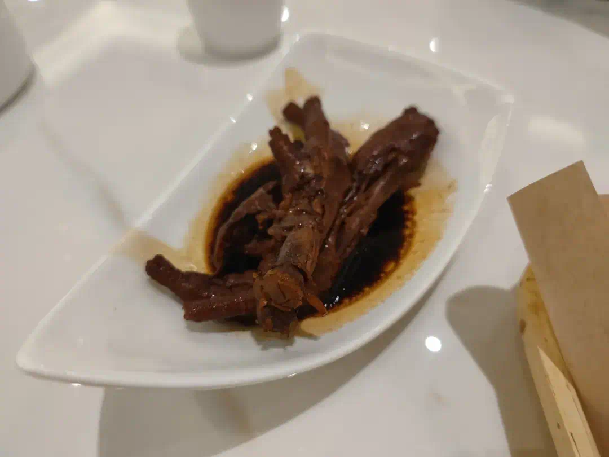
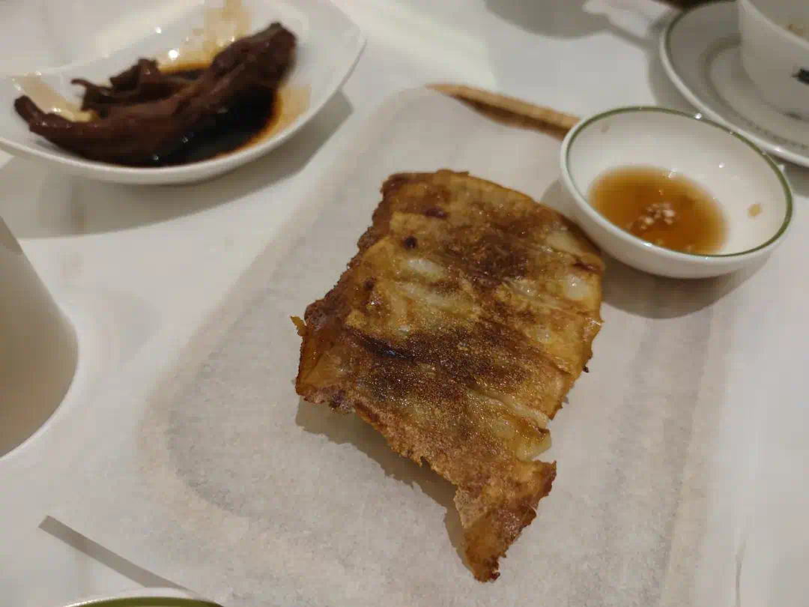
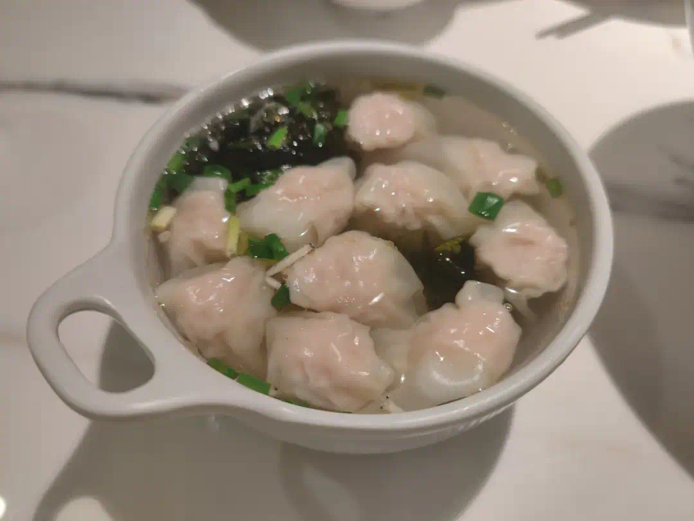
但只能把它当做小吃店，砂锅类的水准都一般。
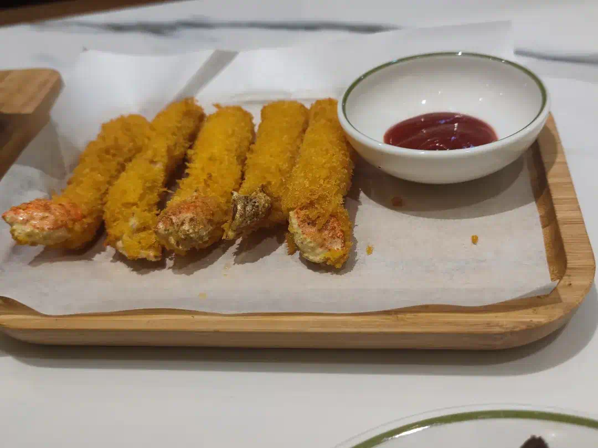
一条项链
七夕礼物，逛了几次金店，挑了一条自己喜欢的。
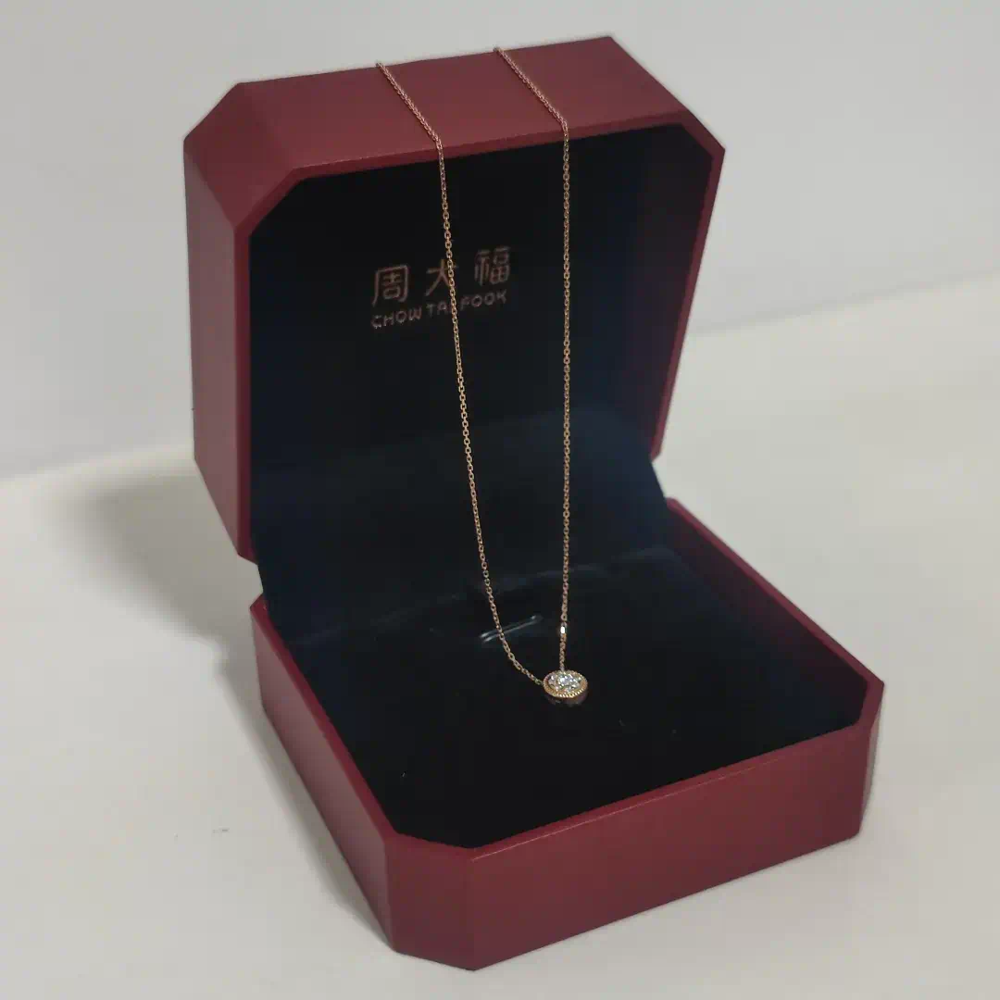
一份自制卤味餐
这一餐竟是从三个平台购买的食材。
在盒马买的卤料包和素菜，听说这个卤料包是盒马的top级商品。
在叮咚买的荤菜和哈密瓜。
在奥乐齐买的椰子水，也是这个夏天我最爱喝的饮料。
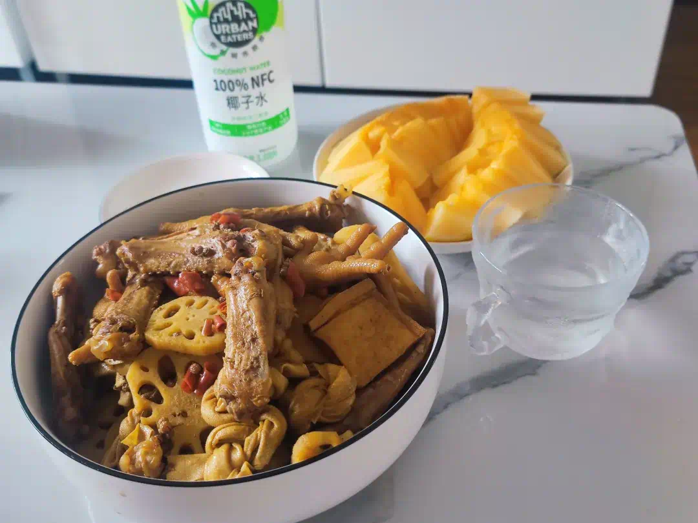
配着电视剧，是周末的极大享受。
一部电视剧
说到电视剧，《边水往事》是这个月看的一部不错的电视剧，讲的一个年轻人勇闯三边坡的故事。
年轻人最初是去他舅舅的工地打工，后来舅舅出事，又欠了工人工资，年轻人没办法，去借贷发工资，然后又想办法去救他的舅舅，一路上见识了三边坡的很多暗黑的事情。
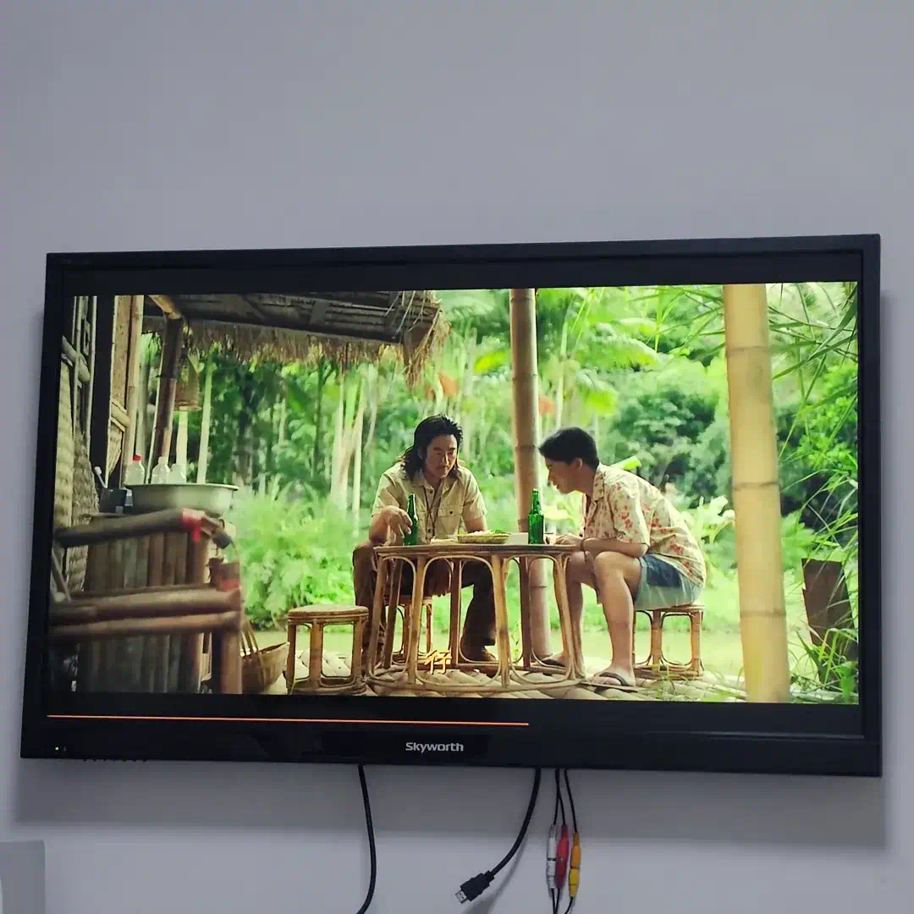
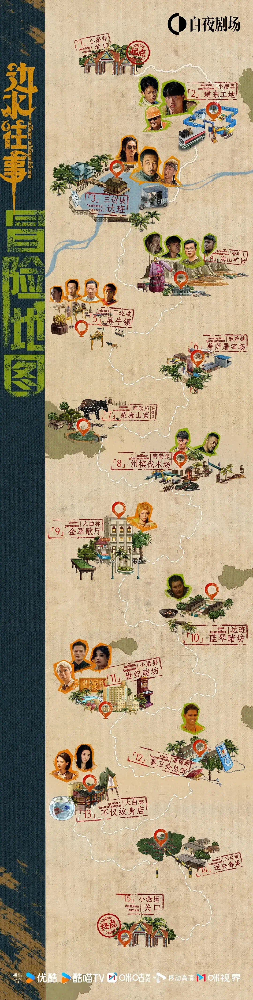
电视剧的设计很用心，片头有创意，每一集的片头海报都不一样，都融入了剧集里的元素，还精心设计了不同的字体。
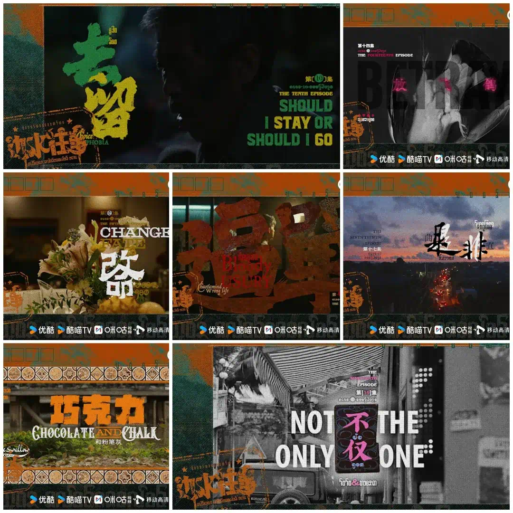
八月再见，九月终于有节日了，已经开始期待放假了。
发布于:
2024/8/31